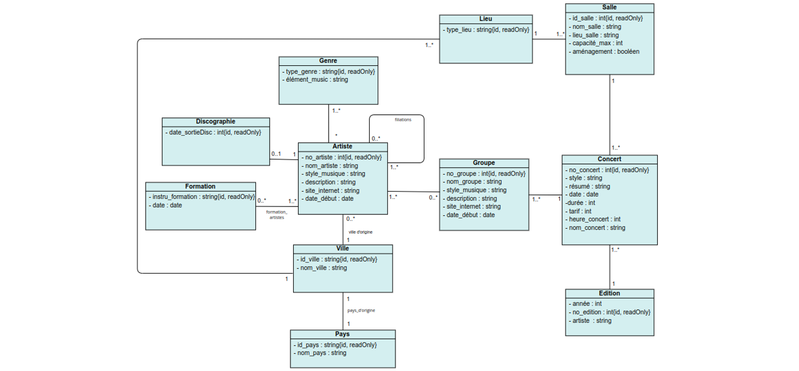

BASE DE DONNÉES
Ici, je vous présente la construction de la base de données qui met en évidence les différentes étapes de création, passant par la création du diagramme de classe, et allant jusqu'à la traduction de ce dernier en SQL.
En duo, nous avons élaboré un diagramme de classe à partir d'un document client qui exposait ses besoins et ses attentes, garantissant ainsi une correspondance précise entre les données et les souhaits exprimés.

En utilisant le diagramme de classe donné par les correcteur, nous avons procédé à la création de la base de données en SQL, en traduisant habilement la structure conceptuelle en une implémentation concrète, prête à stocker et à gérer les données.

Base de données en SQL